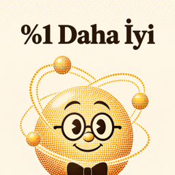
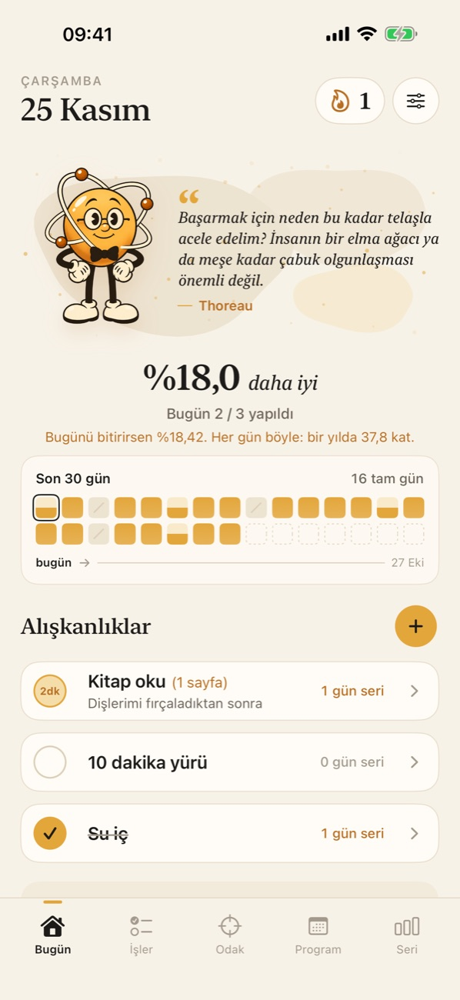
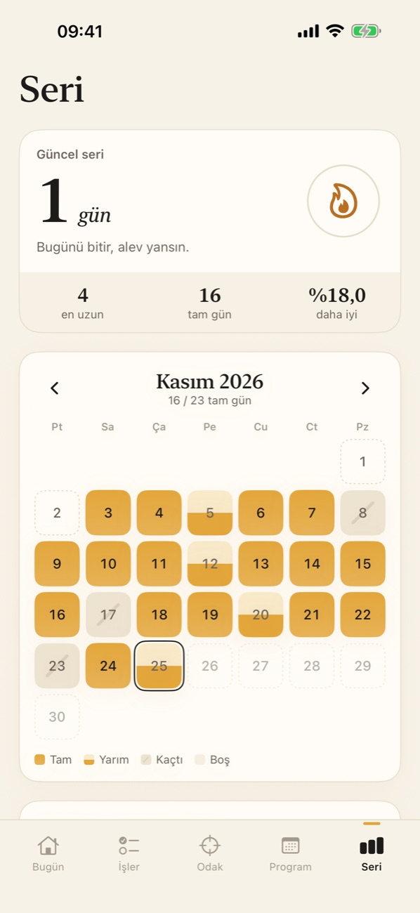
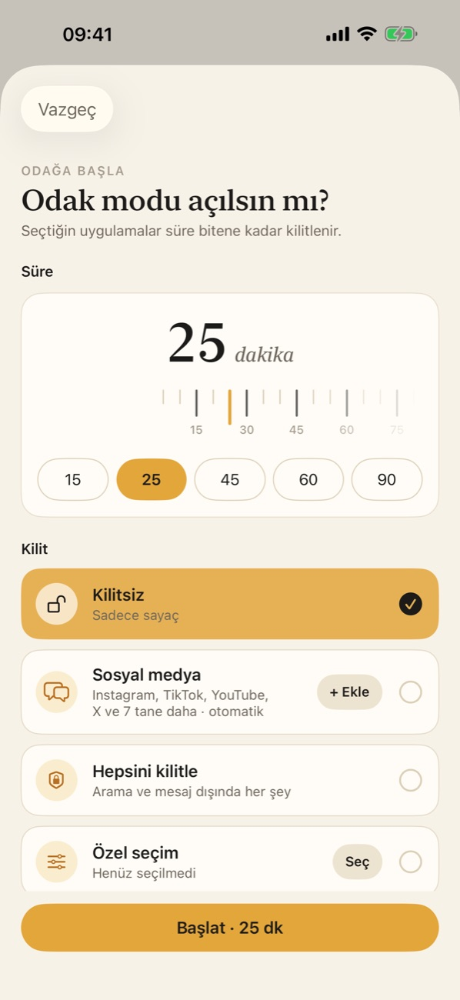
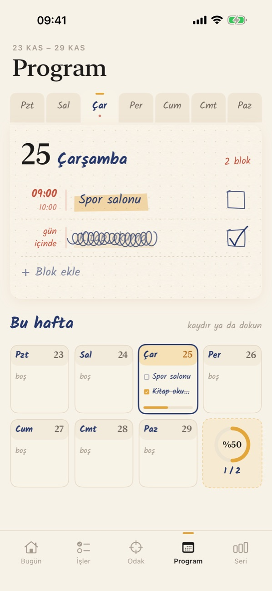

%1 Daha İyi
Her gün biraz. Bir yılda çok.




%1 Daha İyi, küçük alışkanlıklarla her gün yüzde bir ilerlemen için sade bir iPhone ve iPad uygulaması. Her tam gün skorunu %1 büyütür, bir yıl sürdürürsen yaklaşık 37 kat; hiç yapmadığın gün %0,5 geri gider.
- Alışkanlıklar: iki dakikalık hali, ne zaman ve neyin ardından yapacağın
- Son 30 gün ve ay takvimi, günlere göre bitirme oranları
- Defter gibi yapılacaklar listesi, ajanda gibi haftalık program
- Odak sayacı; istersen sosyal medyayı ya da seçtiğin uygulamaları odak boyunca kilitler
- 365 gün boyunca her gün kaynağı belli bir söz
Hesap yok, reklam yok. Her şey cihazında kalır.